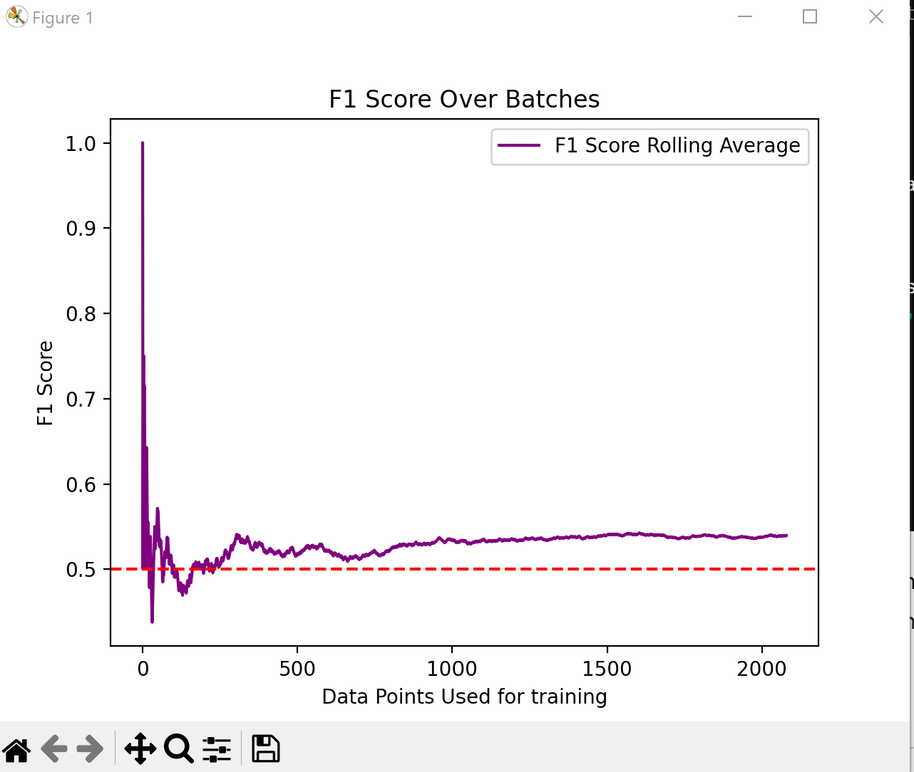

My Projects
Data Science and Machine Learning
I am a huge baseball and Mariners fan and so I built a machine learning model to predict the outcome of baseball games. At first I trained the model on batter and pitcher statistics until the last month of the season and tested on the final month. But I wanted to see what it would be like in practice to train the model after every game was played. How much training data is necessary for the model to predict the winning team with greater than 50% accuracy?  This graph shows the rolling average F1 score of the model tested on each game of the season. While the model doesn't get great performance, I find it interesting how it starts to converge after about 500 games. This project is a work in progress, so I will continue to update the model and I hope to train it on the upcoming 2024 season. I plan to improve the model by training using a neural network to try to have the model learn the most important features. Additionally, I hope using a different weighting curve for the past statistics based on this paper will also boost performance.
JavaScript
Play this set game I implemented using JS!
Java
I implemented a scanner and parser in Java based on This conditional grammar for "MiniJava"
 Click here to check out the github page for it!
Click here to check out the github page for it!